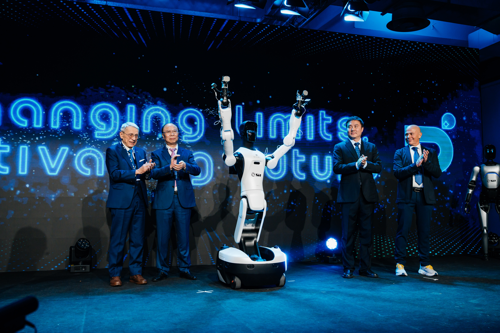

Agibot serait le leader mondial de la robotique humanoïde en 2025?
De O. Héniel · Publié le 11 fevrier 2026

C’est en tout cas la conclusion du cabinet d’analyse Omdia, spécialisé dans les marchés technologiques. Dans son dernier rapport, General-Purpose Embodied Intelligent Robot, publié début 2026, Omdia classe Agibot numéro un mondial en volume de livraisons et en part de marché sur le segment des robots humanoïdes en 2025.
Selon le rapport, Agibot aurait livré environ 5 100 robots humanoïdes au cours de l’année 2025, captant ainsi 39 % du marché mondial. Omdia précise avoir évalué les principaux acteurs du secteur selon huit critères clés : la morphologie et la mobilité, la capacité de charge, la manipulation, la perception et la navigation, les capacités d’intelligence artificielle, la facilité de personnalisation, l’évolutivité de la production et du déploiement, ainsi que l’impact commercial. À l’issue de cette analyse, Agibot s’impose comme l’acteur le plus performant sur l’ensemble de ces dimensions.
Fondée en 2023 à Shanghai, Agibot s’est rapidement imposée comme l’un des nouveaux géants chinois de la robotique, malgré son jeune âge. L’entreprise a su s’intégrer à grande vitesse dans l’écosystème technologique chinois et peut aujourd’hui se targuer d’être l’une des rares sociétés au monde capables de produire et de livrer des robots humanoïdes à grande échelle. En l’espace d’un an, Agibot est passée d’une production d’environ 1 000 robots début 2025 au déploiement de son 5 000ᵉ robot humanoïde en décembre de la même année. Elle s’impose ainsi, en moins de douze mois, comme l’un des principaux producteurs mondiaux de robots humanoïdes.
La stratégie d’Agibot est clairement orientée vers le volume et les usages concrets, avec un portefeuille de robots très diversifié, lui permettant d’adresser l’ensemble des segments d’un marché encore fragmenté. Ses robots sont déjà déployés commercialement dans un large éventail de scénarios, allant de l’hôtellerie et de l’accueil à la sécurité, l’éducation, ainsi qu’aux environnements industriels et logistiques.
Agibot s'inscrit dans la dynamique d'un marché porteur
Le rapport d’Omdia souligne par ailleurs que le marché mondial des robots humanoïdes est entré en phase de croissance rapide, avec des livraisons annuelles totales estimées à environ 13 000 unités en 2025, confirmant une adoption commerciale progressive mais bien réelle. Cette accélération est notamment portée par les avancées en IA générative appliquée à la robotique humanoïde, qui transforment les robots, autrefois limités à des tâches prédéfinies, en systèmes d’intelligence incarnée capables d’apprentissage autonome et d’adaptation à des environnements variés.
Omdia anticipe ainsi une croissance exponentielle du marché des robots humanoïdes au cours des prochaines décennies, avec des livraisons annuelles mondiales pouvant atteindre 2,6 millions d’unités d’ici 2035. Cette dynamique devrait être portée par des acteurs comme Agibot, Unitree ou Tesla, qu’Omdia identifie comme faisant partie de l’avant-garde mondiale des développeurs de robots humanoïdes appelés à structurer et faire progresser durablement le secteur.